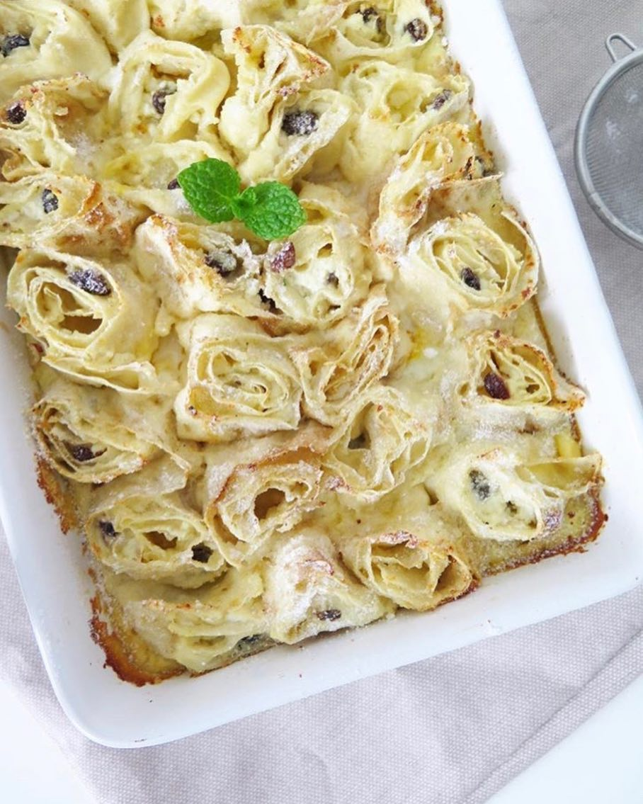

Zapekané palacinky s tvarohom podľa @lavas_zdravychlieb — Normy Jedál
Zdieľame 📷 (recept zajtra) od @ivaness_f. Krasa a suhlasime, toto chces! :)
*
Tak toto chceš!!! 😁 už tak dávno som chcela urobiť zapekané palacinky a konečne prišiel ich čas 🙏🏼 normálne je to veľmi prácne jedlo, a preto som to dosť odkladala, ale keďže som namiesto cesta použila @lavas_zdravychlieb, tak mi odbudlo kopu roboty 😍 boli skutočne vynikajúce 👌🏼 tamtadadááá zapekané tvarohové palacinky s pudingom ❤️ skvelý tip na raňajky alebo sladký obed 😊
.
.
.
.
#dnesjem #dnesranajkujem #dnessnidam #fitfood #foodporn #foodgasm #foodphotography #fitnessjourney #fitnesslifestyle #bavimato #healthy #zdravejedlo #jemezdravoachutne #bojzanovytelo #uzasnejedlo #vkuchyni #pancakes #crepes #healthypancakes #fitpancakes #proteinpancakes #zdravepalacinky #zapekanepalacinkystvarohom #mojeranajky #mojerano #daybyme #lavas_zdravychlieb